# Maven
# 构建命令
# 清理命令
mvn clean
效果：删除 target 目录
# 编译命令
主程序编译：mvn compile
测试程序编译：mvn test-compile
主体程序编译结果存放的目录：target/classes
测试程序编译结果存放的目录：target/test-classes
# 测试操作
mvn test
测试的报告存放的目录：target/surefire-reports
# 打包操作
mvn package
打包的结果 ——jar 包，存放的目录：target
# 安装操作
mvn install
安装的效果是将本地构建过程中生成的 jar 包存入 Maven 本地仓库。这个 jar 包在 Maven 仓库中的路径是根据它的坐标生成的
# 依赖的范围
标签的位置：dependencies/dependency/scope
标签的可选值：compile/test/provided/system/runtime/import
# ①compile 和 test 对比
| main 目录（空间） | test 目录（空间） | 开发过程（时间） | 部署到服务器（时间） | |
|---|---|---|---|---|
| compile | 有效 | 有效 | 有效 | 有效 |
| test | 无效 | 有效 | 有效 | 无效 |
# ②compile 和 provided 对比
| main 目录（空间） | test 目录（空间） | 开发过程（时间） | 部署到服务器（时间） | |
|---|---|---|---|---|
| compile | 有效 | 有效 | 有效 | 有效 |
| provided | 有效 | 有效 | 有效 | 无效 |
# ③结论
compile：通常使用的第三方框架的 jar 包这样在项目实际运行时真正要用到的 jar 包都是以 compile 范围进行依赖的。比如 SSM 框架所需 jar 包。
test：测试过程中使用的 jar 包，以 test 范围依赖进来。比如 junit。
provided：在开发过程中需要用到的 “服务器上的 jar 包” 通常以 provided 范围依赖进来。比如 servlet-api、jsp-api。而这个范围的 jar 包之所以不参与部署、不放进 war 包，就是避免和服务器上已有的同类 jar 包产生冲突，同时减轻服务器的负担。说白了就是：“服务器上已经有了，你就别带啦！”
# 依赖的传递性
# ①概念
A 依赖 B，B 依赖 C，那么在 A 没有配置对 C 的依赖的情况下，A 里面能不能直接使用 C？
# ②传递的原则
在 A 依赖 B，B 依赖 C 的前提下，C 是否能够传递到 A，取决于 B 依赖 C 时使用的依赖范围。
B 依赖 C 时使用 compile 范围：可以传递
B 依赖 C 时使用 test 或 provided 范围：不能传递，所以需要这样的 jar 包时，就必须在需要的地方明确配置依赖才可以。
# 依赖的排除
# 1、概念
当 A 依赖 B，B 依赖 C 而且 C 可以传递到 A 的时候，A 不想要 C，需要在 A 里面把 C 排除掉。而往往这种情况都是为了避免 jar 包之间的冲突。
所以配置依赖的排除其实就是阻止某些 jar 包的传递。因为这样的 jar 包传递过来会和其他 jar 包冲突。
# 2、配置方式
<dependency> | |
<groupId>com.atguigu.maven</groupId> | |
<artifactId>pro01-maven-java</artifactId> | |
<version>1.0-SNAPSHOT</version> | |
<scope>compile</scope> | |
<!-- 使用 excludes 标签配置依赖的排除 --> | |
<exclusions> | |
<!-- 在 exclude 标签中配置一个具体的排除 --> | |
<exclusion> | |
<!-- 指定要排除的依赖的坐标（不需要写 version） --> | |
<groupId>commons-logging</groupId> | |
<artifactId>commons-logging</artifactId> | |
</exclusion> | |
</exclusions> | |
</dependency> |
# 继承
# 1、概念
Maven 工程之间，A 工程继承 B 工程
B 工程：父工程
A 工程：子工程
本质上是 A 工程的 pom.xml 中的配置继承了 B 工程中 pom.xml 的配置。
# 2、作用
在父工程中统一管理项目中的依赖信息，具体来说是管理依赖信息的版本。
它的背景是：
对一个比较大型的项目进行了模块拆分。
一个 project 下面，创建了很多个 module。
每一个 module 都需要配置自己的依赖信息。
它背后的需求是：
在每一个 module 中各自维护各自的依赖信息很容易发生出入，不易统一管理。
使用同一个框架内的不同 jar 包，它们应该是同一个版本，所以整个项目中使用的框架版本需要统一。
使用框架时所需要的 jar 包组合（或者说依赖信息组合）需要经过长期摸索和反复调试，最终确定一个可用组合。这个耗费很大精力总结出来的方案不应该在新的项目中重新摸索。
通过在父工程中为整个项目维护依赖信息的组合既保证了整个项目使用规范、准确的 jar 包；又能够将以往的经验沉淀下来，节约时间和精力。
# 3、举例
在一个工程中依赖多个 Spring 的 jar 包
使用 Spring 时要求所有 Spring 自己的 jar 包版本必须一致。为了能够对这些 jar 包的版本进行统一管理，我们使用继承这个机制，将所有版本信息统一在父工程中进行管理。
# 4、操作
# ①创建父工程
创建的过程和前面创建 pro01-maven-java 一样。
工程名称：pro03-maven-parent
工程创建好之后，要修改它的打包方式：
<groupId>com.atguigu.maven</groupId> | |
<artifactId>pro03-maven-parent</artifactId> | |
<version>1.0-SNAPSHOT</version> | |
<!-- 当前工程作为父工程，它要去管理子工程，所以打包方式必须是 pom --> | |
<packaging>pom</packaging> |
只有打包方式为 pom 的 Maven 工程能够管理其他 Maven 工程。打包方式为 pom 的 Maven 工程中不写业务代码，它是专门管理其他 Maven 工程的工程。
# ②创建模块工程
模块工程类似于 IDEA 中的 module，所以需要进入 pro03-maven-parent 工程的根目录，然后运行 mvn archetype:generate 命令来创建模块工程。
假设，我们创建三个模块工程：
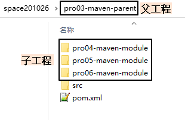
# ③查看被添加新内容的父工程 pom.xml
下面 modules 和 module 标签是聚合功能的配置
<modules> | |
<module>pro04-maven-module</module> | |
<module>pro05-maven-module</module> | |
<module>pro06-maven-module</module> | |
</modules> |
# ④解读子工程的 pom.xml
<!-- 使用 parent 标签指定当前工程的父工程 --> | |
<parent> | |
<!-- 父工程的坐标 --> | |
<groupId>com.atguigu.maven</groupId> | |
<artifactId>pro03-maven-parent</artifactId> | |
<version>1.0-SNAPSHOT</version> | |
</parent> | |
<!-- 子工程的坐标 --> | |
<!-- 如果子工程坐标中的 groupId 和 version 与父工程一致，那么可以省略 --> | |
<!-- <groupId>com.atguigu.maven</groupId> --> | |
<artifactId>pro04-maven-module</artifactId> | |
<!-- <version>1.0-SNAPSHOT</version> --> |
# ⑤在父工程中配置依赖的统一管理
<!-- 使用 dependencyManagement 标签配置对依赖的管理 --> | |
<!-- 被管理的依赖并没有真正被引入到工程 --> | |
<dependencyManagement> | |
<dependencies> | |
<dependency> | |
<groupId>org.springframework</groupId> | |
<artifactId>spring-core</artifactId> | |
<version>4.0.0.RELEASE</version> | |
</dependency> | |
<dependency> | |
<groupId>org.springframework</groupId> | |
<artifactId>spring-beans</artifactId> | |
<version>4.0.0.RELEASE</version> | |
</dependency> | |
<dependency> | |
<groupId>org.springframework</groupId> | |
<artifactId>spring-context</artifactId> | |
<version>4.0.0.RELEASE</version> | |
</dependency> | |
<dependency> | |
<groupId>org.springframework</groupId> | |
<artifactId>spring-expression</artifactId> | |
<version>4.0.0.RELEASE</version> | |
</dependency> | |
<dependency> | |
<groupId>org.springframework</groupId> | |
<artifactId>spring-aop</artifactId> | |
<version>4.0.0.RELEASE</version> | |
</dependency> | |
</dependencies> | |
</dependencyManagement> |
# ⑥子工程中引用那些被父工程管理的依赖
关键点：省略版本号
<!-- 子工程引用父工程中的依赖信息时，可以把版本号去掉。 --> | |
<!-- 把版本号去掉就表示子工程中这个依赖的版本由父工程决定。 --> | |
<!-- 具体来说是由父工程的 dependencyManagement 来决定。 --> | |
<dependencies> | |
<dependency> | |
<groupId>org.springframework</groupId> | |
<artifactId>spring-core</artifactId> | |
</dependency> | |
<dependency> | |
<groupId>org.springframework</groupId> | |
<artifactId>spring-beans</artifactId> | |
</dependency> | |
<dependency> | |
<groupId>org.springframework</groupId> | |
<artifactId>spring-context</artifactId> | |
</dependency> | |
<dependency> | |
<groupId>org.springframework</groupId> | |
<artifactId>spring-expression</artifactId> | |
</dependency> | |
<dependency> | |
<groupId>org.springframework</groupId> | |
<artifactId>spring-aop</artifactId> | |
</dependency> | |
</dependencies> |
# ⑦在父工程中声明自定义属性
<!-- 通过自定义属性，统一指定 Spring 的版本 --> | |
<properties> | |
<project.build.sourceEncoding>UTF-8</project.build.sourceEncoding> | |
<!-- 自定义标签，维护 Spring 版本数据 --> | |
<atguigu.spring.version>4.3.6.RELEASE</atguigu.spring.version> | |
</properties> |
在需要的地方使用 ${} 的形式来引用自定义的属性名：
<dependency> | |
<groupId>org.springframework</groupId> | |
<artifactId>spring-core</artifactId> | |
<version>${atguigu.spring.version}</version> | |
</dependency> |
真正实现 “一处修改，处处生效”。
# 5、实际意义
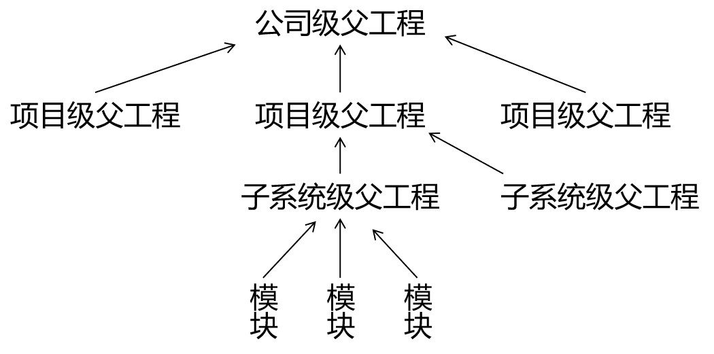
编写一套符合要求、开发各种功能都能正常工作的依赖组合并不容易。如果公司里已经有人总结了成熟的组合方案，那么再开发新项目时，如果不使用原有的积累，而是重新摸索，会浪费大量的时间。为了提高效率，我们可以使用工程继承的机制，让成熟的依赖组合方案能够保留下来。
如上图所示，公司级的父工程中管理的就是成熟的依赖组合方案，各个新项目、子系统各取所需即可。
# 聚合
# 1、聚合本身的含义
部分组成整体
# 2、Maven 中的聚合
使用一个 “总工程” 将各个 “模块工程” 汇集起来，作为一个整体对应完整的项目。
项目：整体
模块：部分
概念的对应关系：
从继承关系角度来看：
父工程
子工程
从聚合关系角度来看：
总工程
模块工程
# 3、好处
一键执行 Maven 命令：很多构建命令都可以在 “总工程” 中一键执行。
以 mvn install 命令为例：Maven 要求有父工程时先安装父工程；有依赖的工程时，先安装被依赖的工程。我们自己考虑这些规则会很麻烦。但是工程聚合之后，在总工程执行 mvn install 可以一键完成安装，而且会自动按照正确的顺序执行。
配置聚合之后，各个模块工程会在总工程中展示一个列表，让项目中的各个模块一目了然。
# 4、聚合的配置
在总工程中配置 modules 即可：
<modules> | |
<module>pro04-maven-module</module> | |
<module>pro05-maven-module</module> | |
<module>pro06-maven-module</module> | |
</modules> |
# 其他核心概念
# 1、生命周期
# ①作用
为了让构建过程自动化完成，Maven 设定了三个生命周期，生命周期中的每一个环节对应构建过程中的一个操作。
# ②三个生命周期
| 生命周期名称 | 作用 | 各个环节 |
|---|---|---|
| Clean | 清理操作相关 | pre-clean clean post-clean |
| Site | 生成站点相关 | pre-site site post-site deploy-site |
| Default | 主要构建过程 | validate generate-sources process-sources generate-resources process-resources 复制并处理资源文件，至目标目录，准备打包。 compile 编译项目 main 目录下的源代码。 process-classes generate-test-sources process-test-sources generate-test-resources process-test-resources 复制并处理资源文件，至目标测试目录。 test-compile 编译测试源代码。 process-test-classes test 使用合适的单元测试框架运行测试。这些测试代码不会被打包或部署。 prepare-package package 接受编译好的代码，打包成可发布的格式，如 JAR。 pre-integration-test integration-test post-integration-test verify install 将包安装至本地仓库，以让其它项目依赖。 deploy 将最终的包复制到远程的仓库，以让其它开发人员共享；或者部署到服务器上运行（需借助插件，例如：cargo）。 |
# ③特点
前面三个生命周期彼此是独立的。
在任何一个生命周期内部，执行任何一个具体环节的操作，都是从本周期最初的位置开始执行，直到指定的地方。（本节记住这句话就行了，其他的都不需要记）
Maven 之所以这么设计其实就是为了提高构建过程的自动化程度：让使用者只关心最终要干的即可，过程中的各个环节是自动执行的。
# 2、插件和目标
# ①插件
Maven 的核心程序仅仅负责宏观调度，不做具体工作。具体工作都是由 Maven 插件完成的。例如：编译就是由 maven-compiler-plugin-3.1.jar 插件来执行的。
# ②目标
一个插件可以对应多个目标，而每一个目标都和生命周期中的某一个环节对应。
Default 生命周期中有 compile 和 test-compile 两个和编译相关的环节，这两个环节对应 compile 和 test-compile 两个目标，而这两个目标都是由 maven-compiler-plugin-3.1.jar 插件来执行的。
# 3、仓库
本地仓库：在当前电脑上，为电脑上所有 Maven 工程服务
远程仓库：需要联网
局域网：我们自己搭建的 Maven 私服，例如使用 Nexus 技术。
Internet
中央仓库
镜像仓库：内容和中央仓库保持一致，但是能够分担中央仓库的负载，同时让用户能够就近访问提高下载速度，例如：Nexus aliyun
建议：不要中央仓库和阿里云镜像混用，否则 jar 包来源不纯，彼此冲突。
专门搜索 Maven 依赖信息的网站：https://mvnrepository.com/
# 搭建 Maven 私服：Nexus
# 1、Nexus 安装
# ①下载地址
小诀窍：使用迅雷下载比直接用浏览器下载快很多
https://download.sonatype.com/nexus/3/latest-unix.tar.gz
# ②上传、解压
上传到 Linux 系统，解压后即可使用，不需要安装。但是需要注意：必须提前安装 JDK。
# ③启动 Nexus
[root@x ~]# /opt/nexus-3.37.0-01/bin/nexus start
WARNING:
WARNING: Detected execution as "root" user. This is NOT recommended!
WARNING:
Starting nexus
[root@x ~]# /opt/nexus-3.37.0-01/bin/nexus status
WARNING:
WARNING: Detected execution as "root" user. This is NOT recommended!
WARNING:
nexus is running.
# ④查看端口占用情况
[root@x ~]# netstat -anp | grep java
tcp 0 0 127.0.0.1:45614 0.0.0.0:* LISTEN 9872/java
tcp 0 0 0.0.0.0:8081 0.0.0.0:* LISTEN 9872/java
上面 45614 这个每次都不一样，不用管它。我们要访问的是 8081 这个端口。但是需要注意：8081 端口的这个进程要在启动 /opt/nexus-3.37.0-01/bin/nexus 这个主体程序一、两分钟后才会启动，请耐心等待。
# ⑤访问 Nexus 首页
首页地址：http://[Linux 服务器地址]:8081/
# 2、初始设置
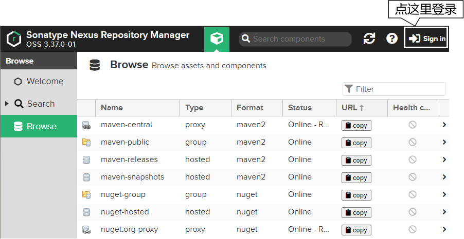
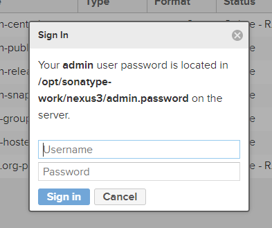
这里参考提示：
用户名：admin
密码：查看 /opt/sonatype-work/nexus3/admin.password 文件
[root@hello ~]# cat /opt/sonatype-work/nexus3/admin.password
ed5e96a8-67aa-4dca-9ee8-1930b1dd5415
所以登录信息输入如下：
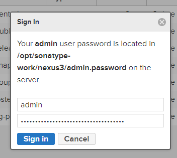
继续执行初始化：
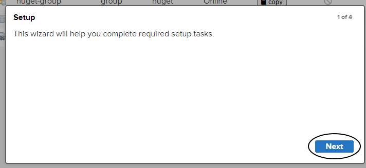
给 admin 用户指定新密码：
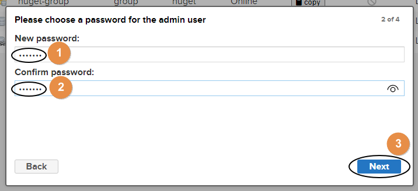
匿名登录，启用还是禁用？由于启用匿名登录后，后续操作比较简单，这里我们演示禁用匿名登录的操作方式：
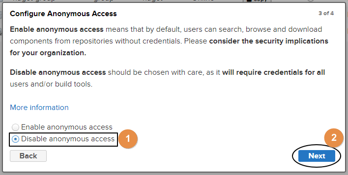
# 3、对接 Nexus
# ①通过 Nexus 下载 jar 包
[1] 了解 Nexus 上的各种仓库
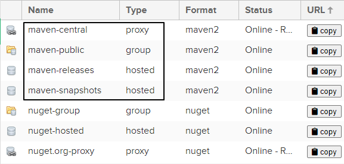
| 仓库类型 | 说明 |
|---|---|
| proxy | 某个远程仓库的代理 |
| group | 存放：通过 Nexus 获取的第三方 jar 包 |
| hosted | 存放：本团队其他开发人员部署到 Nexus 的 jar 包 |
| 仓库名称 | 说明 |
| --------------- | ----------------------------------------------------- |
| maven-central | Nexus 对 Maven 中央仓库的代理 |
| maven-public | Nexus 默认创建，供开发人员下载使用的组仓库 |
| maven-releasse | Nexus 默认创建，供开发人员部署自己 jar 包的宿主仓库 要求 releasse 版本 |
| maven-snapshots | Nexus 默认创建，供开发人员部署自己 jar 包的宿主仓库 要求 snapshots 版本 |
初始状态下，这几个仓库都没有内容：
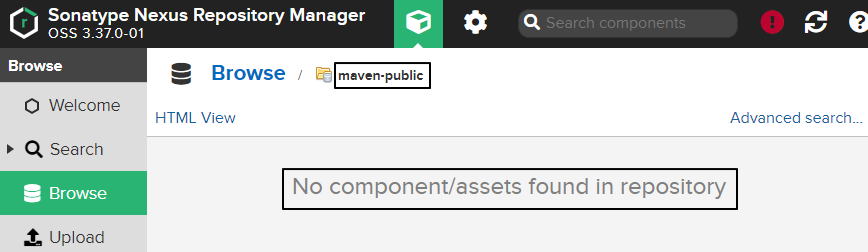
[2] 使用空的本地仓库
配置 maven 配置文件 setting.xml
<!-- 配置一个新的 Maven 本地仓库 --> | |
<localRepository>D:/maven-repository-new</localRepository> |
[3] 指定 Nexus 服务器地址
把我们原来配置阿里云仓库地址的 mirror 标签改成下面这样：
<mirror> | |
<id>nexus-mine</id> | |
<mirrorOf>central</mirrorOf> | |
<name>Nexus mine</name> | |
<url>http://192.168.198.100:8081/repository/maven-public/</url> | |
</mirror> |
这里的 url 标签是这么来的：
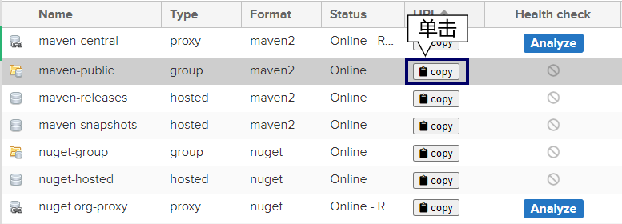
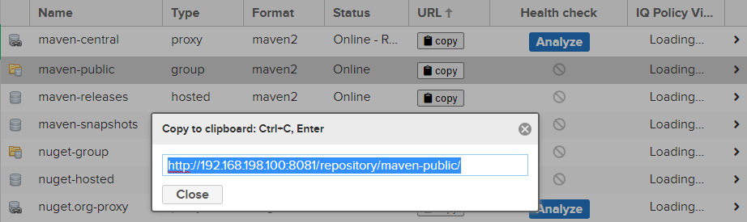
把上图中看到的地址复制出来即可。如果我们在前面允许了匿名访问，到这里就够了。但如果我们禁用了匿名访问，那么接下来我们还要继续配置 settings.xml：
<server> | |
<id>nexus-mine</id> | |
<username>admin</username> | |
<password>atguigu</password> | |
</server> |
这里需要格外注意：server 标签内的 id 标签值必须和 mirror 标签中的 id 值一样。
[4] 效果
找一个用到框架的 Maven 工程，执行命令：
mvn clean compile |
下载后，Nexus 服务器上就有了 jar 包：
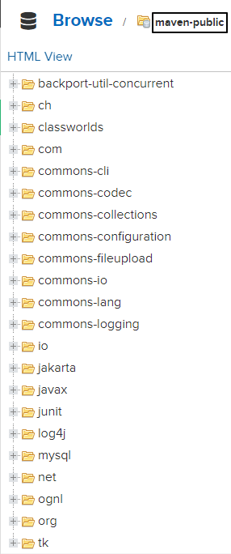
# ②将 jar 包部署到 Nexus
[1] 配置 Maven 工程
<distributionManagement> | |
<snapshotRepository> | |
<id>nexus-mine</id> | |
<name>Nexus Snapshot</name> | |
<url>http://192.168.198.100:8081/repository/maven-snapshots/</url> | |
</snapshotRepository> | |
</distributionManagement> |
这里 snapshotRepository 的 id 标签也必须和 settings.xml 中指定的 mirror 标签的 id 属性一致。
[2] 执行部署命令
mvn deploy |
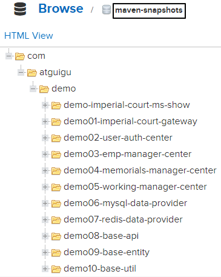
# ③引用别人部署的 jar 包
[1] 提出问题
默认访问的 Nexus 仓库：maven-public
存放别人部署 jar 包的仓库：maven-snapshots
[2] 配置 Maven 工程
<repositories> | |
<repository> | |
<id>nexus-mine</id> | |
<name>nexus-mine</name> | |
<url>http://192.168.198.100:8081/repository/maven-snapshots/</url> | |
<snapshots> | |
<enabled>true</enabled> | |
</snapshots> | |
<releases> | |
<enabled>true</enabled> | |
</releases> | |
</repository> | |
</repositories> |
# 4、修改仓库配置
举例：修改 maven-central 仓库代理的远程库地址
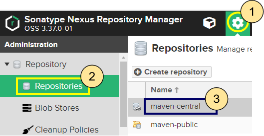
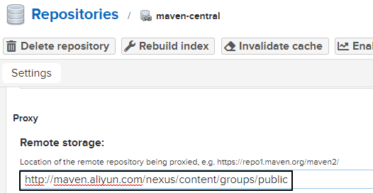